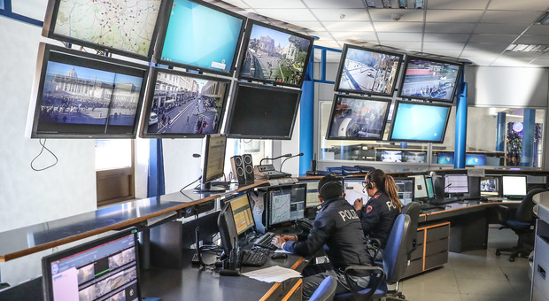
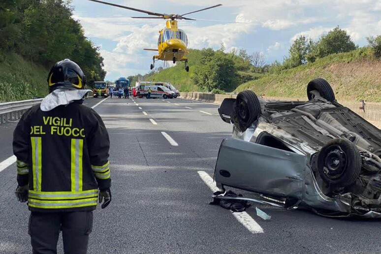

La Polizia di Firenze ha condotto un'importante operazione contro la criminalità organizzata nella zona di Scandicci...
La Polizia di Firenze ha condotto un'importante operazione contro la criminalità organizzata nella zona di Scandicci, portando all'arresto di 12 persone sospettate di appartenere a un gruppo criminale internazionale...
Nuove misure di sicurezza per gli eventi estivi
In vista della stagione estiva, sono state implementate nuove misure di sicurezza per garantire la protezione dei cittadini durante gli eventi pubblici...
In vista della stagione estiva, sono state implementate nuove misure di sicurezza per garantire la protezione dei cittadini durante gli eventi pubblici. La Polizia di Firenze è impegnata a monitorare attentamente ogni situazione...

Inaugurazione della nuova centrale operativa
È stata inaugurata la nuova centrale operativa della Polizia di Firenze, dotata di tecnologie all'avanguardia per migliorare il coordinamento delle operazioni...
È stata inaugurata la nuova centrale operativa della Polizia di Firenze, dotata di tecnologie all'avanguardia per migliorare il coordinamento delle operazioni. La nuova struttura permetterà una risposta più rapida ed efficiente alle emergenze...

Campagna di sensibilizzazione sulla sicurezza stradale
La Polizia di Firenze lancia una campagna di sensibilizzazione per la sicurezza stradale, rivolta soprattutto ai giovani e ai neopatentati...
La Polizia di Firenze lancia una campagna di sensibilizzazione per la sicurezza stradale, rivolta soprattutto ai giovani e ai neopatentati. L'obiettivo è ridurre gli incidenti stradali e promuovere una guida responsabile...